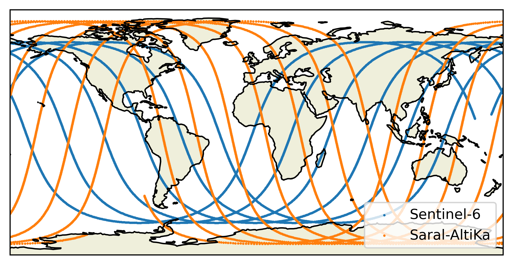

The Orbit class#
The Orbit class is used to simulate the orbits of satellites.
It relies on orekit to simulate the position of satellites based on Two Line Elements (TLE) and on a linear interpolation to obtain a sufficiently fine time resolution while keeping compute time low enough.
A basic use of this class is as follows:
from orbitx import Orbit
import datetime
orbit = Orbit.simulate(
satellites=["S6", "SA"],
start_date=np.datetime64("2020-02-01T00:00:00"),
end_date=np.datetime64("2020-02-01T12:00:00"),
propagation_sampling_interval=np.array(20, dtype="timedelta64[s]"),
interpolation_sampling_interval=np.array(5, dtype="timedelta64[s]"),
reference_date=np.datetime64("2000-01-01T00:00:00"),
)
print(orbit)
Orbit object for satellites ['Sentinel-6', 'Saral-AltiKa'].
Start date: 2020-02-01T00:00:00
End date: 2020-02-01T12:00:00
Propagation sampling interval: 20 seconds
Interpolation sampling interval: 5 seconds
Reference date used to represent time in seconds since: 2000-01-01T00:00:00
Number of simulated times: 8641.
Created on 2026-01-06T13:20:34 using the version 1.0 of orbitx.
The satellites attribute is a list of satellite short names of arbitrary length.
The supported short names are currently the following ones:
"CS2": "CryoSat-2",
"J2": "JASON-2",
"J3": "JASON-3",
"LS8": "Landsat-8",
"LS9": "Landsat-9",
"N20": "NOAA-20",
"S2A": "Sentinel-2A",
"S2B": "Sentinel-2B",
"S3A": "Sentinel-3A",
"S3B": "Sentinel-3B",
"S6": "Sentinel-6",
"SA": "Saral-AltiKa"
Note that the attributes start_date, end_date, and reference_date (optional defaulting to 1st of January 1970) must be given as numpy
[datetime64 objects](https://numpy.org/doc/stable/reference/arrays.datetime.html)
and the attributes propagation_sampling_interval and interpolation_sampling_interval must be given as numpy timedelta64 objects.
An orbit object can simply be plotted with a call to the plot method of the class:
orbit.plot()

The core of an Orbit class object is its orbits attribute.
It contains an xarray.Dataset object.
This dataset uses a time coordinate, which is given in seconds since the chosen reference date (float64).
It contains the following variables:
time_datetime: gives anumpy.datetime64representation of the time coordinatelat<i>(igives the number of the satellite in thesatellitesargument) latitude of the satellitelon<i>(igives the number of the satellite in thesatellitesargument) longitude of the satellite
And it contains the following attributes:
satellites: the list of the satellites for which orbits are givenstart_date: The start date of the orbit in seconds since the reference dateend_date: The end date of the orbit in seconds since the reference datepropagation_sampling_interval: the number of seconds separating two successing simulated (physics based) positions in the orbitinterpolation_sampling_interval: the number of seconds separating two interpolated positions in the orbit
print(orbit.orbits)
<xarray.Dataset> Size: 415kB
Dimensions: (time: 8641, satellites: 2)
Coordinates:
* time (time) float64 69kB 6.338e+08 6.338e+08 ... 6.339e+08
* satellites (satellites) <U2 16B 'S6' 'SA'
Data variables:
reference_date datetime64[s] 8B 2000-01-01
time_datetime (time) datetime64[s] 69kB 2020-02-01 ... 2020-02-01T12:00:00
lat (time, satellites) float64 138kB 13.25 -74.64 ... -46.37
lon (time, satellites) float64 138kB 171.5 -124.0 ... -81.99
Attributes:
satellites: ['S6', 'SA']
start_date: 633830400.0
end_date: 633873600.0
propagation_sampling_interval: 20
interpolation_sampling_interval: 5
An Orbit object can be exported to netCDF4 format and loaded from such a file as well (as long as the structure is as expected).
orbit.to_netcdf("./test_export/")
loaded_orbit = Orbit.from_netcdf("./test_export/2020-02-01_2020-02-01_psi20.0_isi5.0_orbit_S6_SA.nc")
print(loaded_orbit == orbit)
True